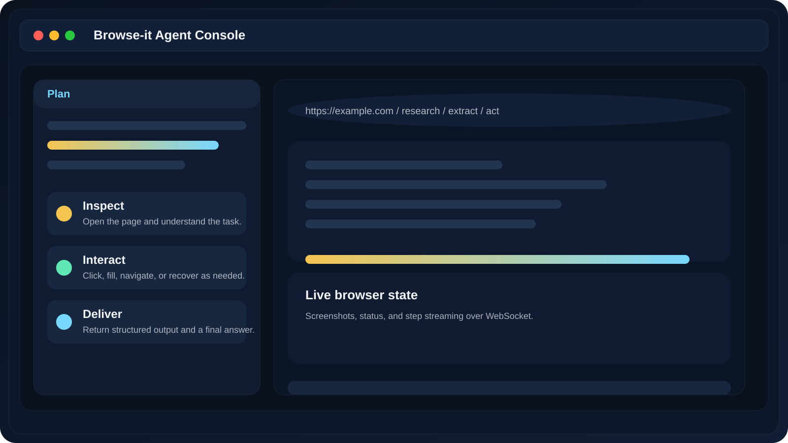
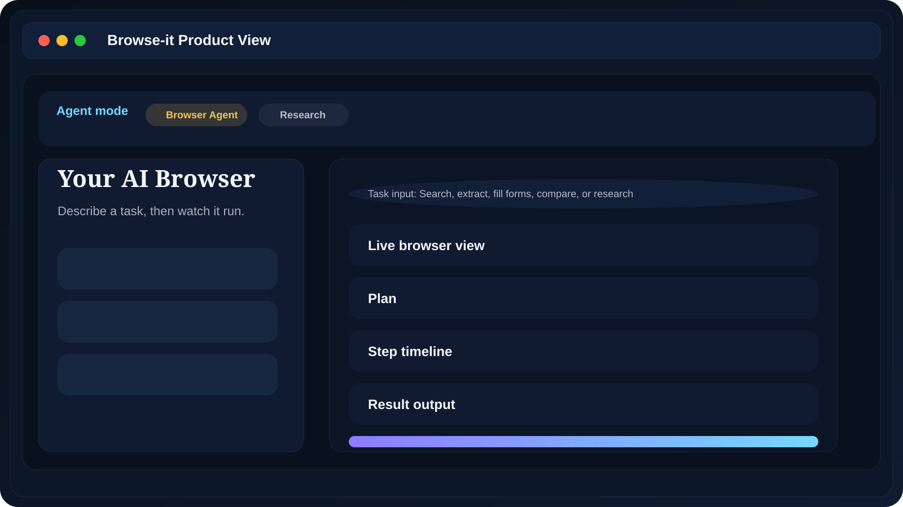

Browse-it is a browser automation workspace that turns natural-language goals into live, multi-step web execution with planning, screenshots, history, recordings, and control.
Open the page and understand the task.
Click, fill, navigate, or recover as needed.
Return structured output and a final answer.
The product is designed to let a user describe a task once, then supervise the agent while it handles the browsing, retries, extraction, and reporting.
The React + Vite UI provides task entry, settings, history, and a live browser workspace with step updates and final outputs.
The backend runs the agent, streams events through WebSocket, and exposes routes for agent control, browser state, config, and recordings.
Run, pause, resume, stop, and track progress.
Expose screenshots and current page state.
Read and update model and browser settings.
List saved session recordings from disk.
Push live plan, step, status, and browser events.
Typed request and response schemas.
These are the same project screenshots shown in the README so the demo deck stays aligned with the documentation.

Main agent interface screenshot recreated from the README layout.

Secondary product screenshot recreated from the README layout.
The user provides a goal, the backend prepares the agent and browser, and the UI stays in sync as the agent plans, acts, recovers, and returns a result.
Enter a natural-language instruction in the browser console.
Choose a model, browser mode, vision, planning, and limits.
The agent can generate a plan before taking action.
It navigates, clicks, fills, extracts, and responds to errors.
Live screenshots, step logs, browser state, and status are streamed.
Final results, history, and recordings remain available for review.
Launch the app and open the Agent page.
Pick Browser Agent or Deep Research.
Enter a task like searching, extracting, or filling a form.
Point out the live browser view, plan panel, and progress bar.
Show pause/resume and the history page after execution.
Browse-it shows the Agentic Web idea in practice: let AI browse, interact, recover, and complete tasks while keeping the user informed and in control.